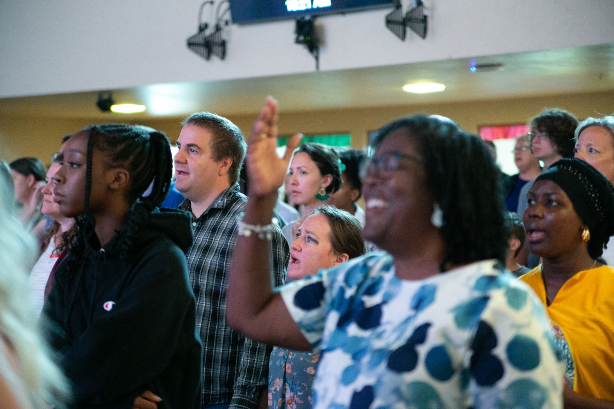
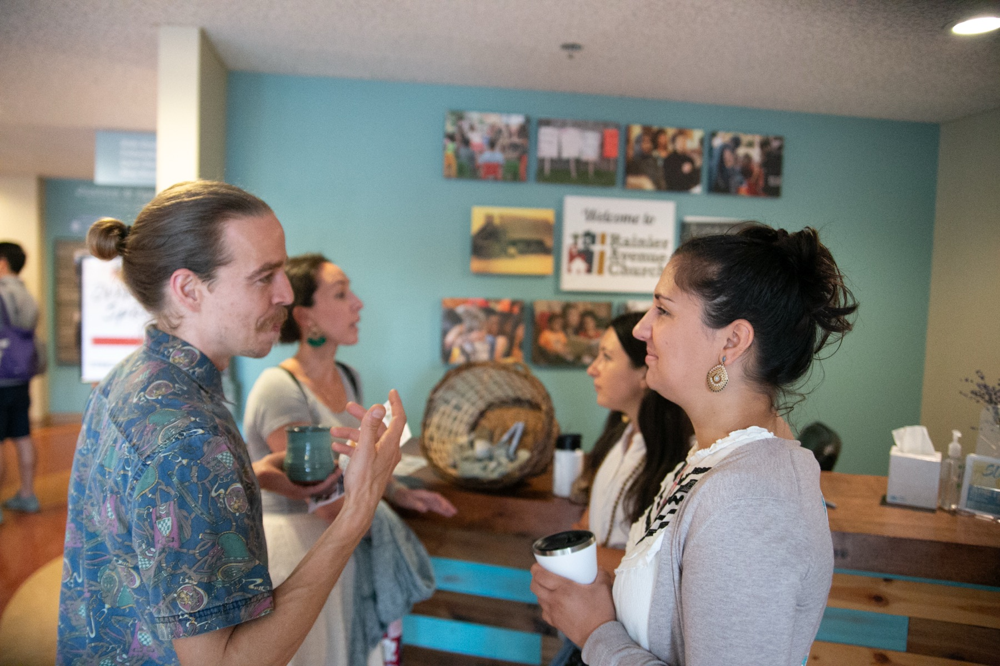

Rainier Avenue Church is a multi-ethnic, multi-cultural, and multi-generational congregation in the Hillman City neighborhood of South Seattle — and we have been on this corner since 1904.
Each part of Rainier Avenue Church reflects something we believe and pursue together.
We are located in one of the most ethnically diverse zip codes in the United States. We celebrate the various ethnicities God has gathered here, and we pursue reconciliation and justice as biblical values — not afterthoughts.
We've worshipped on this corner since 1904. We take our geographic presence seriously, working to know, love, and bless the neighborhood and community around us.
Our primary identity is rooted in being part of Christ's Body — a worshipping family guided by Scripture and shaped by historic theological orthodoxy.
We are culturally, linguistically, and chronologically diverse — by design. We believe this diversity is a gift from God that reflects His love for all people.
Racial reconciliation is a priority, and that priority shapes how we worship. Multicultural elements are woven into our services. Our sanctuary is fully accessible for all mobility levels. We work to make sure that the family of God we gather as on Sunday looks like the family of God we'll worship with in eternity.

Established in 1904, Rainier Avenue Church remains one of the longest-standing institutions of Hillman City.
Across more than a century — under multiple pastoral leaders, through changing neighborhoods, and amid a city that has reshaped itself many times over — this congregation has held onto a single, stubborn commitment: to follow Jesus Christ and to pursue the common good. We continue that story today.

We are a Free Methodist congregation (FMCUSA), drawing on a Wesleyan spiritual heritage that emphasizes serving the poor, the ordination of women, and a longstanding commitment to justice and freedom.
As a member of the CCDA, we hold to its core values of Relocation, Reconciliation, and Redistribution. These values are lived out through partnerships including Urban Impact Seattle, Hope Central Pediatrics, and the 10:19 Refugee Resettlement Program.